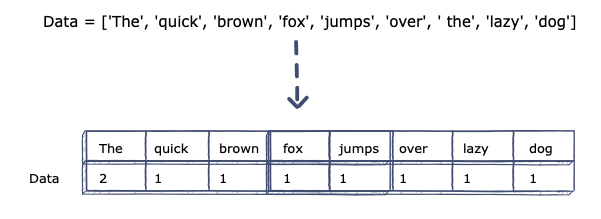

Naive Bayes is a well known classification algorithm. In short, classification algorithms predict the class of given (input) data. Examples
of classification problems are: Detecting if an email is spam or not, detecting if a patient will have cancer (or any other disease), and much more. Classification
can be better understood in the below figure:
In the diagram above, there are two classes within the data, class A and class B (For example, these classes could be class male and class female).
In brief, the algorithm's job is to fit a line that perfectly distinguishes both classes from each other within the feature space (features X and Y in the case
of the above diagram).
Just like all machine learning problems, classification has many algorithms that do the job, each with its own set of assumptions and functionalities. This section
will cover how one of these algorithms, called Naive Bayes, was used in this project.
Naive Bayes is a classification algorithm based on Bayes’ Theorem with an assumption of independence among predictors. In simple terms, a Naive Bayes classifier assumes that the
presence of a particular feature in a class is unrelated to the presence of any other feature.
There are several type of Naive Bayes algorithms, including:
> Gaussian Naive Bayes: This type of Naive Bayes is used when variables are continuous in nature.
It assumes that all the variables have a normal distribution.
> Multinomial Naive Bayes: This is used when the features represent the frequency of something. This algorithm is mostly used in cases with text features.
> Bernoulli Naive Bayes: This is used when features are binary.
Since my project had both text data (lyrics) and record/numerical data, Gaussian and Multinomial naive bayes were both used.
The goal of this model was to try and predict what era a song belonged to based on its lyrics (Song X belongs to one of [50s,60s,70s,...,2010s]).
My personal hypothesis was that such a model would not perform that well, as the "Exploring Data" part of this project proved that there is no significant change behind the main messages
songs carried. The only major difference between eras when it came to lyrics turned out to be the prevalence of racist words and profanity,
something which might or might not warrant the use of Naive Bayes. The only way to test my hypothesis was to use the model and see for myself.
The first step to prepare the data for Naive Bayes was filtering down our target variable (year/era of a song) to a couple of classes only. For example,
a song belonging to 1989 would be given the label "80s", one belonging to 2004 would be labeled as "90s", etc. Doing this reduced the target variable to
7 classes: "50s" , "60s", "70s", "80s", "90s", "00s", "2010s".
Next, stop words had to be removed, something which was already done in the "Data Cleaning" section of the project. Stop words introduce unnecessary biases
to the model and might skew the results while not having any meaning whatsoever. Stop words include words like 'i', 'me', 'my', 'myself', 'we', 'our', 'ours',
'ourselves', 'you', etc.
One of the necessary steps was assigning a numeric value to each class in the dataset. For example, "50s" was assigned
the value 0, "60s" was assigned value 1, and so on. This is a necessary step to facilitate the classification process for the developed models.
The last cleaning step was using a count vectorizor algorithm on the lyrics data. In short, count vectorizor is an algorithm that converts text to numerical
data, since machines cannot understand characters and words. Below is a brief illustration of the concept:

The above illustration shows how CountVectorizor breaks down a text sentence to an array with each word associated with a count value. The same logic was applied to the
lyrics data to have it ready for machine learning.
The final step before modeling was to split the data into testing and training sets, which is a crucial step in any machine learning project. Training data is the initial
dataset you use to teach a machine learning application to recognize patterns , while testing data is used to evaluate the trained model's accuracy. The train-test split I
used was 80-20, meaning 80% of the data was used to train the model, while 20% was used to test it.
As previously mentioned, since the problem at hand dealt with text data and classification of text data, the chosen model was Multinomial Naive Bayes. Using Multinomial
Naive Bayes to classify a song's decade resulted in a 40% accuracy, which might or might not be considered as low, depending on the use case. Before going more into
any sort of result analysis, it was important to have a baseline model to compare this model to. A baseline model is the worst possible model performance for the given
problem, and it is nothing more than randomly assigning a class to an entry without consideration for any factor. For this 7 class classification model, the baseline
model would have a 14% classification accuracy (1/7 = 0.14).
In practice, my Multinomial Naive Bayes model performs twice as good as the worst classifier, which indicates that it does somewhat work (or at least the logic
for it to work is there). However, a 40% classification accuracy might be very low if this model is to be deployed in some use case. For example, is a recommendation
engine is being built using this model, 40% accuracy means less than half of recommended content is of relevance to the user, leading to a very weak recommendation engine.
Apart from accuracy, another important thing to look at when it comes to classification is the confusion matrix. In its essence, a confusion matrix shows the ways in which a classification model
is confused when it makes predictions, which is done by showing the he number of correct and incorrect predictions for each class. Below is the confusion matrix for this Naive
Bayes model:
The above matrix shows that the 80s and the 2010s were the eras that were best predicted by the model, with all the remaining eras having predictability ranging from negligible
to average at best. From a musical perspective, this might be due to the fact that music style was pretty much established during these era and have come either directly before
a cultural change in music or long after one. The 80s is the decade directly prior to the 90s, which was proven to be the era with the biggest shift in music (more details in
the EDA section), and music could have been settled down by then (1950s till that point). As for the 2010s, which is 2 decades after this huge cultural shift, music might have settled to its new style by then
after adopting to the new shifts in trends.
The above hypothesis would gain more credibility if similar results were obtained by using musical features to build a classifier, as musical features have a much higher
impact on the era a song was released than lyrics. This was done using a Gaussian Naive Bayes classifier and is explained below.
Despite having a hypothesis that lyrics of a song do not have much predictive ability, my second hypothesis was that musical features of music actually do. This is
mainly due to the drastic changes in music features per decade ever since the 1950s. To test this hypothesis, a Naive Bayes model called "Gaussian Naive Bayes" was trained
on the audio features of songs and lyrics were disregarded. Gaussian Naive Bayes is different from Multinomial Naive Bayes in the sense that the features it is trained on
are continuous in nature (features in Multinomial Naive Bayes are discrete). The main assumptions behind Gaussian Naive Bayes are that the continuous features
are normally distributed and that they are independent from each other (meaning there is no/low correlation between features x1,x2,...xn).
Note: Similar to what was done in the multinomial naive bayes, the data was split into training and testing sets.
I approached this problem by developing three separate gaussian naive bayes models:
1. Standard model: Trained the model on all available continuous features without normalizing them.
2. Normalized features model: Trained the model on all available continuous features after normalizing them.
3. Dropped dependent features model: Trained the model on normalized continuous features after dropping the dependent features. Any
feature with some sort of correlation with another feature was dropped (refer to correlation heatmap in the EDA tab).
The reason I split the work into three methods is to properly understand what factors have a direct improvement on
the model accuracies and which ones do not. Models 2 and 3 are in accordance with Naive Bayes's assumptions, where model
2 makes sure the input data is normally distributed and model 3 makes sure all features in that input data are independent
from each other, both of which are major assumptions of the Naive Bayes algorithm.
Similar to what was done with the trained multinomial classifier, all of these models were also compared to a baseline model,
which was also a random classifier that had a 14% accuracy.
The most noticeable thing from the above results is that dropping all dependent variables from the input data
more than doubles the accuracy from about 40% to 86%. This showcases the power and influence behind Naive Bayes's
assumption that all features are independent.
Another important point conveyed by the bar plot is that all models (even models 1 and 2 which are inferior to model 3)
outperform the worst case random classifier by far, meaning that any Naive Bayes model on this data would be more than twice
as good as randomly guessing or assigning classes to the data.
Finally, a confusion matrix was built on model 3 (which was the best model) to see how did the predicted vs actual values
differed when using the model.
The above confusion matrix reflects the models high classification accuracy with most songs' eras
properly predicted. The only decade with some sort significant of significant error is the 2010s, where
several songs in this decade were classified as 80s songs. This fact is interesting considering the first
Naive Bayes model trained on lyrics, which has a much lower accuracy, had the 80s as the decade with the
most correct predictions, something that alludes to the idea that lyrics and audio features are completely independent
from each other when it comes to classifying a song's era.
Overall, the use of Naive Bayes proved to be very accurate for classifying a song's era only when using audio features and not lyrics of songs. Moreover, the work done using this method reemphasized to me the importance of the independence of features assumption it relies on and how important in general model assumptions are and how significant of an impact they could have on the results.
>